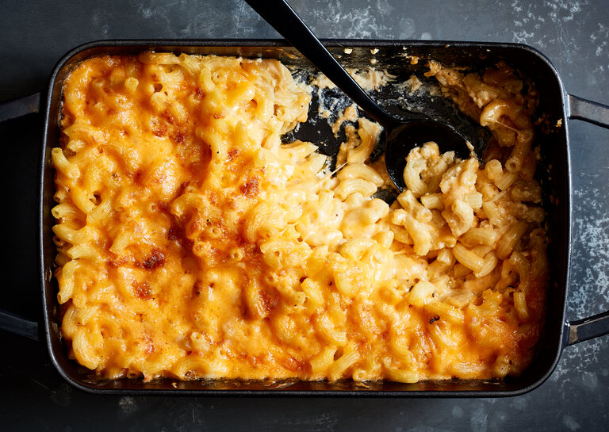

Southern style, baked mac and cheese
Heat oven to 350 degrees. Bring a large pot of generoursly salted water to a boit. Add macaroni and cook according to package directions until a little under al dente, about 4 minutes. Transfer to a colander and rinse under cold water to a stop cooking. Set aside.
In a large bowl, whisk milk and eggs. Add cooked macaroni, 2 cups extra-sharp Cheddar, melted butter, 1 1/2 teaspoons salt and 1/2 teaspoon pepper, and stir until well combined.
Add half the macaroni mixture to a 9-by-13 inch baking dish in an even layer. Sprinke 1 1/2 cups Colby Jack evenly on top. Spread the remaining macaroni mixture on top in an even layer. Cover with aluminum foil, transfer to the middle rack of the oven and bake for 30 minutes.
Remove from oven. Carefully remove and discard the aluminum foil. Top the macaroni mixture with the remaining 2 cups Cheddar and 1/4 cup Colby Jack. Broil on top rack until cheese is browned in spots, 3 to 5 minutes.
Remove form oven and let cool until the macaroni and cheese is fully set, 10 to 15 minutes. The mixture may first appear jiggly, but it will firm up as it cools. Serve warm